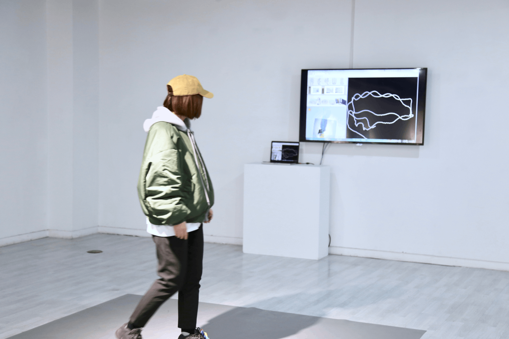
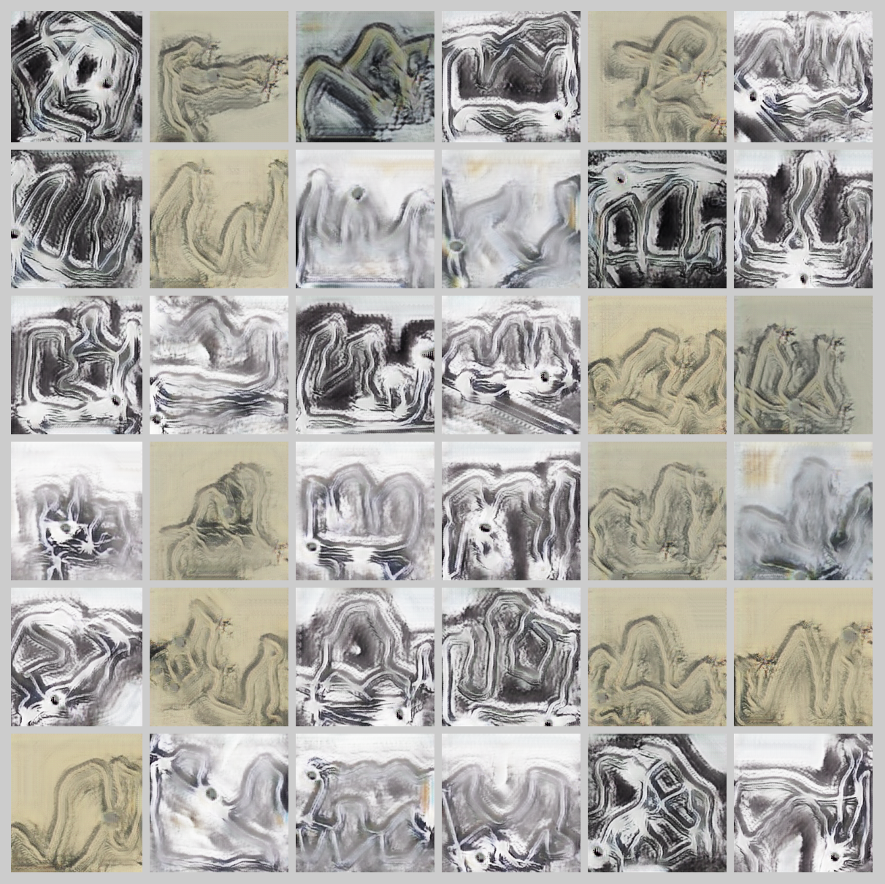

Walking Through Shanshui
Janurary 2019
Overview
“Walking through Shanshui”, as an interactive installation, is an extension and explanation of “Shanshui-DaDA”. Participants will put on the hat artist prepared and walk in the interacting zone. The system will track and record the path on a canvas, send the sketch to Shanshui-DaDA and create a Chinese Shanshui accordingly. Shanshui represents the nature in a semi-abstract way, a long scroll of Shanshui will even has multiple perspectives and consequently change based on the content. It’s more a collage of journeys or even imaginations. To connect the experience and the creation of Shanshui becomes the initial goal.
We set up the system as a room-size enclosed interactive exhibit. On-site staff/assistants provide guidance during the live show. Only be one participant at a time can control the digital canvas and she or he will receive a yellow tracking hat from the assisting staff. Participants will first put on the hat and then walk into the interactive space to start engaging with the system. Only the hat bearer may enter the interactive stage. As the bearer moves, the system displays the real-time position-log sketch on the tracking monitor. When the participant feels ready, she or he can walk outside of the stage and hand the hat back to assisting staff for the next participant.

The tracking system was programmed with a client-side JavaScript library called p5.js and it queries the Sketch-to-Shanshui API with a sketch input. The back-end generates a painting and posts to the front-end. The client-server system performs locally, and no network problem is required.
This project has been exhibited at Shanghai DUOLUN Museum of Modern Art for 45 days. We were documenting on-site interactions on the first day. There were more than 300 engagements and generated paintings. There were long lines of excited observers waiting, but the experience was worth the wait and they spoke highly of the interaction and overall results. We selected some highlights to describe what participants created with our AI. Overall, most observer reacted very positively. There were 9642 participants who generated paintings during the exhibition.
